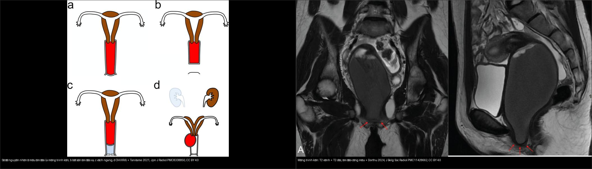
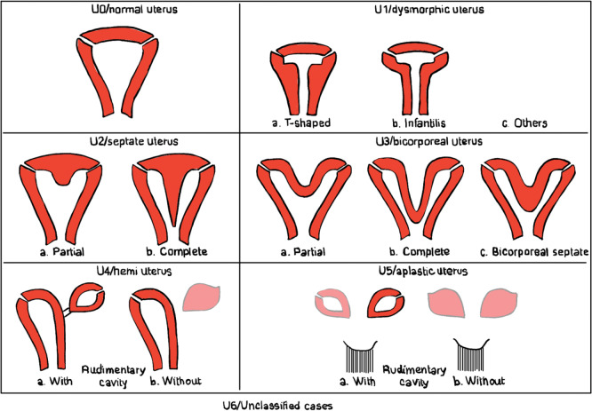
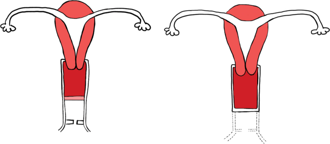
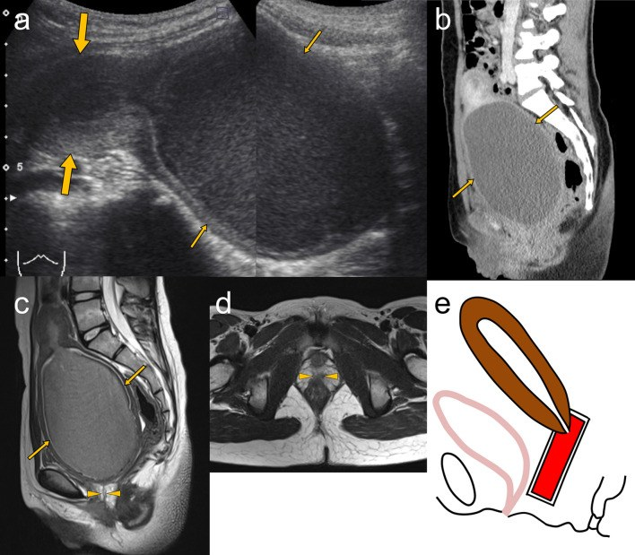
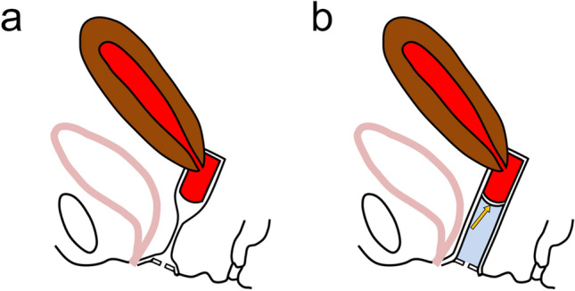
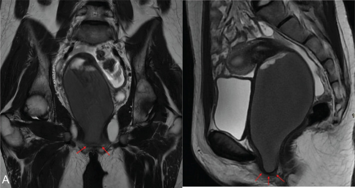
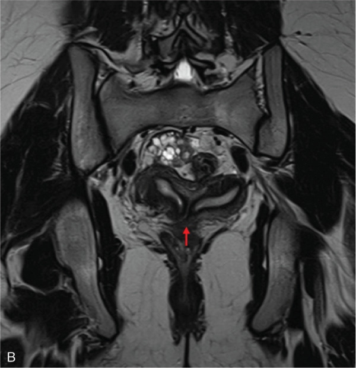

529 — Cổ tử cung & âm đạo bẩm sinh: dị dạng tắc nghẽn (ESHRE/ESGE C0–C4 / V0–V4) / Obstructive cervicovaginal anomalies
Tags: pattern:di-dang-co-tu-cung-am-dao vung:am-dao score:ESHRE-ESGE protocol:MRI-tieu-khung protocol:sieu-am-tieu-khung
Mức chắc chắn (certainty): tổng hợp y văn (literature synthesis) — nhóm tự biên từ y văn mở (J Belg Soc Radiol 2024, Jpn J Radiol 2021, Insights into Imaging 2025), số liệu định lượng lấy nguyên văn từ bài gốc.
Bài này phủ cổ tử cung & âm đạo (phân nhóm C và V của ESHRE/ESGE) — trọng tâm là ứ máu âm đạo (hematocolpos) do tắc nghẽn đường ra ở trẻ vị thành niên. Hình thái thân tử cung (vách ngăn vs hai sừng) đã có ở 528.
1. Tổng quan — hai thì phôi thai, 4 kiểu tắc nghẽn + TẠI SAO ứ máu thấy được trên MRI
- Phôi thai học (embryology): thân tử cung, cổ tử cung và 2/3 trên âm đạo tạo bởi ống Müller (paramesonephric); 1/3 dưới âm đạo tạo bởi củ âm đạo (sinovaginal bulb) mọc từ xoang niệu sinh dục. Lòng âm đạo được canal hóa (canalization) hoàn tất vào khoảng tháng thứ 5 thai kỳ / tuần 20 (xác nhận trong Tanitame 2021; Dixit 2025). Củ âm đạo thoái hóa tạo khoang ở tuần 17–18.
- TẮC NGHẼN xảy ra ở 4 thì/mô khác nhau — phân biệt bằng VỊ TRÍ, không bằng triệu chứng (triệu chứng đều giống: vô kinh nguyên phát + đau bụng chu kỳ + khối vùng chậu):
- Không thủng được màng trinh (imperforate hymen) — màng trinh kín ở ngay lỗ âm đạo (introitus); đây KHÔNG phải dị dạng Müller nhưng ESHRE/ESGE vẫn xếp vào V3 cùng vách ngang.
- Vách ngang âm đạo (transverse vaginal septum) — lỗi canal hóa đĩa âm đạo, nằm trên màng trinh, hay ở âm đạo trên 46% / giữa 35% / dưới 14% (Tanitame 2021).
- Bất sản âm đạo xa (distal vaginal agenesis, V4) — âm đạo dưới không phát triển, còn phần âm đạo trên căng máu.
- Tắc nghẽn một nửa âm đạo + bất sản thận cùng bên (OHVIRA/HWWS, V2) — do bất thường một ống Müller kèm ống Wolff (mesonephric): một bên tắc, một bên thông.
- TẠI SAO ứ máu lại thấy rõ trên MRI (vật lý tín hiệu): máu kinh ứ lại trong âm đạo/tử cung trải qua phân giải hemoglobin theo thời gian — máu bán cấp giàu methemoglobin (Fe³⁺) cho T1 tăng tín hiệu (và bài gốc dùng ảnh T1 DIXON water để lộ chất máu), trong khi T2 của dịch ứ phần lớn rất sáng vì giàu nước tự do ở thì mới. Vì vậy: T2 = thấy ứ máu ở đâu; T1/DIXON = xác nhận đó là MÁU (sản phẩm phân hủy), không phải dịch trong như nang.
- Ngưỡng định lượng (bắt buộc nhớ):
- Màng trinh kín: tần suất 1/1000 – 1/2000 nữ (Tanitame 2021; Dorthu 2024 ghi
< 1%) — nguyên nhân ứ máu âm đạo thường gặp nhất. - Vách ngang âm đạo: 1/30.000 – 1/84.000 nữ (Tanitame 2021).
- Dị dạng ống Müller (MDA) nói chung: 5,5% dân số; ~8% người vô sinh; 13,3–24,5% người sẩy thai tái diễn (Dixit 2025).
- Ứ máu kéo dài không điều trị → dính vòi tử cung, lạc nội mạc tử cung, vô sinh (Dorthu 2024; Tanitame 2021).
- Màng trinh kín: tần suất 1/1000 – 1/2000 nữ (Tanitame 2021; Dorthu 2024 ghi
2. Mẫu hình + chẩn đoán phân biệt theo VỊ TRÍ tắc nghẽn (Gamut)
- Tắc ở mức lỗ âm đạo: màng trinh kín (V3) — màng phồng màu xanh/tím, ứ máu sát introitus.
- Tắc trong ống âm đạo: vách ngang âm đạo (V3) — ứ máu phía trên vách, màng trinh bình thường; vách dọc âm đạo (V1 không tắc / V2 tắc).
- Tắc ở mức phát triển âm đạo: bất sản âm đạo xa (V4) — còn âm đạo trên + cổ; bất sản âm đạo hoàn toàn (V4 trong MRKH, U5) — không có tử cung/cổ.
- Tắc ở mức cổ tử cung: bất sản cổ (C4) / bất sản một bên (C3); vách ngăn cổ (C1), cổ đôi (C2).
- Tắc một nửa (bên) kèm bất sản thận cùng bên: OHVIRA/HWWS (V2).
- Gợi nhớ vị trí — trục từ ngoài vào trong: MÀNG TRINH (ngoài cùng) → VÁCH NGANG (trong ống) → BẤT SẢN ÂM ĐẠO XA → CỔ → BẤT SẢN/OHVIRA (trên cùng); tắc càng cao/tắc kín càng nặng thì càng dễ có ứ máu tử cung (hematometra) + lạc nội mạc ngược dòng.
3. Bảng so sánh phân biệt (ma trận đối chiếu)
| Thực thể (entity) | Hình ảnh điển hình | Chốt vào (rule-in) | Chốt loại (rule-out) | Gợi ý xác nhận |
|---|---|---|---|---|
| Màng trinh kín (V3) | Màng phồng xanh/tím tại lỗ âm đạo; US/MRI: âm đạo căng dịch đến sát introitus | Màng phồng ở lỗ âm đạo + vô kinh + đau chu kỳ | Màng trinh bình thường (có lỗ) → không phải màng trinh kín | Khám lỗ âm đạo; hymenotomy/hymenectomy |
| Vách ngang âm đạo (V3) | Vách trên màng trinh; ứ máu phía trên vách, đo được độ dày vách + khoảng cách tới lỗ âm đạo | Vách nằm trên màng trinh bình thường + ứ máu trên vách | Màng trinh kín (màng phồng ở lỗ) / OHVIRA (chỉ một nửa) | MRI có bơm jelly âm đạo; cắt vách + nối lưu thông |
| Bất sản âm đạo xa (V4) | Phần âm đạo trên căng máu + khoảng mất/cụt âm đạo dưới; tử cung bình thường hoặc ứ máu | Có tử cung/cổ + mất đoạn âm đạo dưới | Không có tử cung/cổ → MRKH (U5) | Vaginoplasty; MRI đo độ dài đoạn cụt |
| Bất sản cổ (C4/C3) | Cổ không thấy / một bên cổ + ứ máu tử cung (hematometra) | Thân tử cung có + không thấy cổ + ứ máu tử cung | Cổ bình thường → không phải | MRI; xử trí khó (tạo cổ vs cắt tử cung) |
| OHVIRA/HWWS (V2) | Tử cung đôi/hai sừng + nửa âm đạo căng máu T1/T2 (tắc) + BẤT SẢN THẬN cùng bên | Bộ ba: tắc nửa âm đạo + bất sản thận cùng bên + tử cung đôi | Thận hai bên bình thường → loại OHVIRA | MRI 3D T2; cắt vách ngang lưu thông |
| Vách dọc âm đạo (V1) | Dải dọc chia đôi lòng âm đạo, hai nửa đều thông | Hai nửa âm đạo thông nhau (không ứ) | Một nửa tắc + ứ → V2 (OHVIRA) | Khám/MRI; chỉ cắt khi có triệu chứng |

Trái: sơ đồ 4 nguyên nhân ứ máu (a màng trinh kín, b bất sản âm đạo xa, c vách ngang, d OHVIRA). Phải: màng trinh kín — T2 vành + T2 dọc cho âm đạo căng máu, mũi tên đỏ chỉ màng trinh kín ở lỗ âm đạo. Nguồn: Tanitame et al., Jpn J Radiol 2021 Fig. 1 (PMC8338850) + Dorthu & Danthine, J Belg Soc Radiol 2024 Fig. 2 (PMC11428662), đều CC BY 4.0, ghép bằngtools/make_composite.py (letterbox, giữ aspect).
Đọc phân nhóm ESHRE/ESGE C0–C4 / V0–V4 (chốt phân loại)
Bảng phân nhóm cổ + âm đạo đi kèm mọi dị dạng thân tử cung (Dixit 2025):
| Cổ tử cung (C) | Âm đạo (V) |
|---|---|
| C0 — cổ bình thường | V0 — âm đạo bình thường |
| C1 — cổ có vách ngăn | V1 — vách dọc âm đạo không tắc |
| C2 — cổ đôi | V2 — vách dọc âm đạo tắc nghẽn |
| C3 — bất sản cổ một bên | V3 — vách ngang âm đạo và/hoặc màng trinh kín |
| C4 — bất sản cổ (hai bên) | V4 — bất sản âm đạo |

Sơ đồ ESHRE/ESGE: U0 bình thường, U1 dysmorphic (T-shaped/trẻ sơ sinh), U2 vách ngăn, U3 hai thân, U4 một sừng, U5 bất sản, U6 không xếp loại — mỗi ca kèm phân nhóm C0–C4 và V0–V4. Nguồn: Dorthu & Danthine, J Belg Soc Radiol 2024 Fig. 1 (PMC11428662), CC BY 4.0.4. Protocol chụp + hệ phân độ/điểm chuẩn hóa
- Đầu tay: siêu âm tiểu khung (transabdominal ở bé gái còn màng trinh) — thấy khối dịch âm vang dạng ống sau bàng quang (âm đạo căng máu) ± ứ máu tử cung; đo kích thước khối ứ.
- MRI tiểu khung (khi siêu âm không kết luận, tắc phức tạp, hoặc chuẩn bị mổ) — protocol:
- T2W sagittal + axial + coronal (đo vị trí và độ dày vách, khoảng cách vách tới lỗ âm đạo, chiều dài đoạn âm đạo còn lại).
- T1W ± fat-sat (hoặc DIXON) để xác nhận chất máu (methemoglobin T1 sáng) phân biệt dịch trong.
- Kỹ thuật bơm jelly (gel siêu âm) vào âm đạo trước chụp khi nghi vách ngang: làm căng đoạn âm đạo dưới giúp định vị vách và màng trinh bình thường — MRI thường khó phân biệt vách ngang với thành âm đạo xẹp (Tanitame 2021).
- BẮT BUỘC với mọi ca OHVIRA/HWWS và một sừng: siêu âm thận ± MR niệu đồ tìm bất sản thận cùng bên (nếu sót → bỏ lỡ bộ ba chẩn đoán).
- Xử trí theo tắc nghẽn: màng trinh kín → hymenotomy (được ưu tiên hơn hymenectomy vì ít biến chứng hơn — Lee et al. trong Tanitame 2021); vách ngang → cắt vách + nối lưu thông; bất sản âm đạo xa → vaginoplasty (biến chứng muộn hay gặp nhất là hẹp âm đạo sau mổ); OHVIRA → cắt vách ngang nửa tắc.
flowchart TD
A["Be gai vo kinh nguyen phat + dau bung chu ky + khoi vung chau"] --> B["Sieu am tieu khung: khoi dich dang ong sau bang quang?"]
B -->|"Khong ro"| C["MRI T2 + T1/DIXON (bom jelly neu nghi vach ngang)"]
B -->|"Co"| C
C --> D{"U mau nam O DAU so voi mang trinh?"}
D -->|"Ngay lo am dao, mang phong xanh/tim"| E["MANG TRINH KIN (V3): hymenotomy"]
D -->|"TREN mang trinh binh thuong"| F["VACH NGANG AM DAO (V3): cat vach + noi"]
D -->|"Chi mot NUA am dao + bat san than cung ben"| G["OHVIRA/HWWS (V2): cat vach ngang"]
D -->|"Mat doan am dao duoi, con co tu cung"| H["BAT SAN AM DAO XA (V4): vaginoplasty"]
D -->|"Khong co co tu cung + u mau tu cung"| I["BAT SAN CO (C4/C3): tao co vs cat tu cung"]
G --> J["LUON sieu am/MR than: bat san than cung ben"]

Trái: vách ngang âm đạo — vách ngăn chia lòng âm đạo, ứ máu phía trên. Phải: bất sản âm đạo — đoạn âm đạo dưới không phát triển (đường đứt). Nguồn: Dorthu & Danthine, J Belg Soc Radiol 2024 Fig. 5 (PMC11428662), CC BY 4.0.
Bé gái 11 tuổi bất sản âm đạo xa: (a) siêu âm bụng — tử cung hình bình thường + phần âm đạo trên căng giãn dịch có echo di động; (b–d) hình dọc/ngang xác nhận ứ máu đoạn trên; (e) sơ đồ. Nguồn: Tanitame et al., Jpn J Radiol 2021 Fig. 4 (PMC8338850), CC BY 4.0.
Bơm jelly qua lỗ âm đạo để định vị vách ngang: (a) khó phân biệt vách với thành âm đạo xẹp; (b) sau bơm, cột jelly (mũi tên vàng) làm căng đoạn âm đạo dưới → lộ rõ vị trí/độ dày vách. Nguồn: Tanitame et al., Jpn J Radiol 2021 Fig. 6 (PMC8338850), CC BY 4.0.5. Biến thể bình thường và cạm bẫy
- Màng trinh kín KHÔNG phải dị dạng ống Müller — nhưng phân loại ESHRE/ESGE vẫn gộp chung nhóm V3 với vách ngang; đừng vì thế mà suy ra có bất thường thân tử cung.
- Màng trinh kín vs vách ngang — cùng gây ứ máu, khác vị trí: màng trinh = màng phồng ở lỗ âm đạo; vách ngang = vách trên màng trinh. Luồn sonde/đầu nhỏ vào lỗ thấy màng trinh bình thường = vách ngang.
- Ứ máu trên MRI ≠ luôn là máu: nang Gartner (còn ống Wolff) cho dịch đơn thuần T1 tối; chỉ khi T1/DIXON sáng mới khẳng định chất máu.
- Bỏ sót bất sản thận cùng bên (satisfaction of search): thấy ứ máu là dừng → sót OHVIRA → ứ máu tái diễn + lạc nội mạc; luôn siêu âm thận.
- Bỏ sót ở bé gái chưa dậy thì: ứ máu có thể biểu hiện bí tiểu, khối bụng, táo bón bị chẩn đoán nhầm viêm ruột thừa/viêm đường tiết niệu (Tanitame 2021) → chậm chẩn đoán → lạc nội mạc muộn.
- MRKH (U5) vs tắc nghẽn: MRKH không có tử cung; nếu còn tử cung + ứ máu nghĩ tắc cổ/âm đạo, không phải MRKH.
6. Tự lượng giá — Blind Quiz
Ca 1 — Bé gái 13 tuổi vô kinh nguyên phát + đau bụng chu kỳ; khám thấy màng phồng xanh ở lỗ âm đạo. Đọc ảnh trước.

- Gợi ý lâm sàng (clinical context): 13 tuổi, chưa có kinh, đau bụng từng đợt; màng phồng màu xanh/tím ở lỗ âm đạo.
- Câu hỏi: Mô tả dấu hiệu (finding) chính? Vì sao khối dịch lại nằm sát lỗ âm đạo? 3 chẩn đoán phân biệt + cách xử trí?
Bấm để hiện đáp án (findings + chẩn đoán)
- Dấu hiệu (findings): khối dịch T2 rất sáng dạng ống chiếm toàn bộ âm đạo, kéo xuống tận màng trinh kín (mũi tên đỏ trên T2 vành + T2 dọc) — ứ máu âm đạo (hematocolpos) đẩy lồi màng trinh.
- Chẩn đoán (diagnosis): màng trinh kín (imperforate hymen) — vì ứ máu xuống sát introitus; xử trí hymenotomy (ưu tiên hơn cắt màng vì ít biến chứng).
- Nguồn ảnh: Dorthu & Danthine, J Belg Soc Radiol 2024 Fig. 2 (PMC11428662), CC BY 4.0.
Ca 2 — Bé gái 11 tuổi khối bụng + bí tiểu; siêu âm nghi ứ máu. Đọc ảnh trước.
- Gợi ý lâm sàng: khối bụng, bí tiểu/bí tiêu; màng trinh bình thường khi khám.
- Câu hỏi: Khối dịch nằm ở đoạn nào của âm đạo? Tử cung có ứ máu không? Vì sao màng trinh bình thường vẫn có ứ máu?
Bấm để hiện đáp án (findings + chẩn đoán)
- Dấu hiệu: (a) siêu âm — tử cung hình bình thường + phần âm đạo TRÊN căng giãn máu với echo di động; (b–d) khẳng định đoạn âm đạo dưới không phát triển (không có lòng xuống lỗ âm đạo).
- Chẩn đoán: bất sản âm đạo xa (distal vaginal agenesis, V4) — vì đoạn cụt âm đạo dưới; màng trinh bình thường nhưng không có ống dẫn từ âm đạo trên ra ngoài. Xử trí vaginoplasty (theo dõi hẹp âm đạo sau mổ).
- Nguồn ảnh: Tanitame et al., Jpn J Radiol 2021 Fig. 4 (PMC8338850), CC BY 4.0.
Ca 3 — Bé gái 15 tuổi đau bụng chu kỳ, siêu âm thấy khối bên cạnh tử cung; thiếu một quả thận. Đọc ảnh trước.

- Gợi ý lâm sàng: đau bụng chu kỳ, khối dịch một bên, không thấy thận phải trên siêu âm.
- Câu hỏi: Tử cung có mấy sừng? Vì sao chỉ một nửa âm đạo ứ máu? Bộ ba OHVIRA gồm gì?
Bấm để hiện đáp án (findings + chẩn đoán)
- Dấu hiệu: T2 vành cho tử cung hai sừng (ESHRE/ESGE U3) — hai lòng nội mạc tách biệt; ứ máu chỉ ở một nửa âm đạo bị tắc, kèm bất sản thận cùng bên (Fig. 3 panel A).
- Chẩn đoán: OHVIRA/HWWS = tử cung đôi + tắc nửa âm đạo + bất sản thận cùng bên. Xử trí cắt vách ngang để lưu thông; luôn kiểm tra thận hai bên.
- Nguồn ảnh: Dorthu & Danthine, J Belg Soc Radiol 2024 Fig. 3 (PMC11428662), CC BY 4.0.
Ca 4 — Bé gái 14 tuổi vô kinh + đau bụng; MRI có bơm jelly thấy vách ngăn ngang trong âm đạo. Đọc ảnh trước.
- Gợi ý lâm sàng: vô kinh, đau bụng chu kỳ; màng trinh bình thường.
- Câu hỏi: Nhờ đâu mà MRI phân biệt được vách ngang với thành âm đạo xẹp? Xử trí?
Bấm để hiện đáp án (findings + chẩn đoán)
- Dấu hiệu: (b) cột jelly (mũi tên vàng) qua lỗ âm đạo làm căng đoạn âm đạo dưới → lộ rõ vách ngang + ứ máu trên vách.
- Chẩn đoán: vách ngang âm đạo (ESHRE/ESGE V3) — màng trinh bình thường, tắc ở vách trên; xử trí cắt vách + nối lưu thông.
- Nguồn ảnh: Tanitame et al., Jpn J Radiol 2021 Fig. 6 (PMC8338850), CC BY 4.0.
Ca 5 — Phân tích ảnh ghép dưới đây: hai ca đều ứ máu âm đạo, khác nhau ở đâu?
Bấm để hiện đáp án
- Trái (sơ đồ): 4 nguyên nhân ứ máu — a màng trinh kín / b bất sản âm đạo xa / c vách ngang / d OHVIRA; vị trí ứ máu so với màng trinh là chốt phân biệt.
- Phải (MRI): ứ máu xuống sát màng trinh kín = màng trinh kín (V3). Xử trí hymenotomy.
- Nguồn: PMC8338850 Fig. 1 + PMC11428662 Fig. 2, CC BY 4.0 (ảnh ghép letterbox).
Bài liên quan chéo
- 500 – Tổng quan Vú & Sản Phụ khoa
- 528 – Dị dạng tử cung bẩm sinh: vách ngăn vs hai sừng (ESHRE/ESGE & ASRM)
- 520 – Tử cung: xơ FIGO, adenomyosis, dày nội mạc
- 550 – Thai sớm & thai ngoài tử cung
- 571 – Sẩy thai tái diễn: tiếp cận hình ảnh tử cung
- 635 – Dị tật tiết niệu nhi (bất sản thận cùng bên)
Ảnh
- Tên file:
529_slug_Modality_SourceID.jpg. Nguồn + giấy phép từng ảnh trongimages/CREDITS.md. - AuntMinnie (https://www.auntminnie.com): paywall — chỉ dẫn link, không tải.
Không dùng để chẩn đoán độc lập khi chưa có người hướng dẫn.